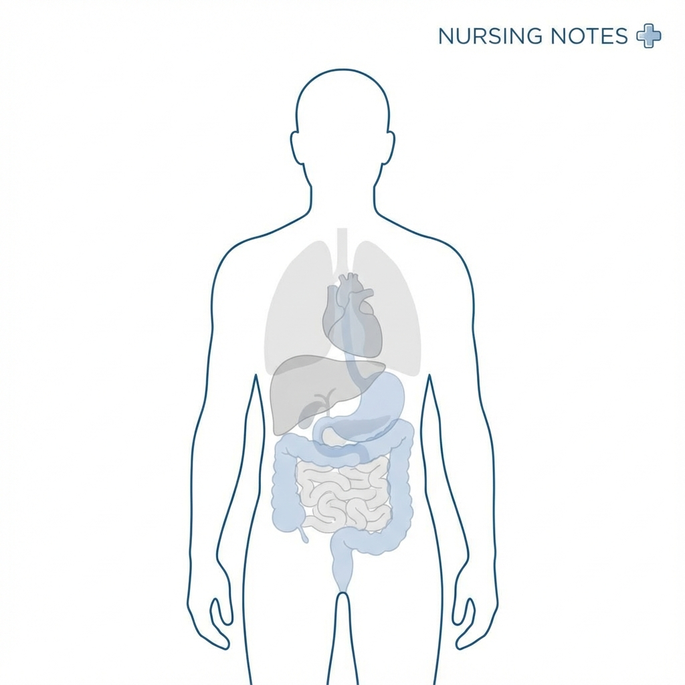
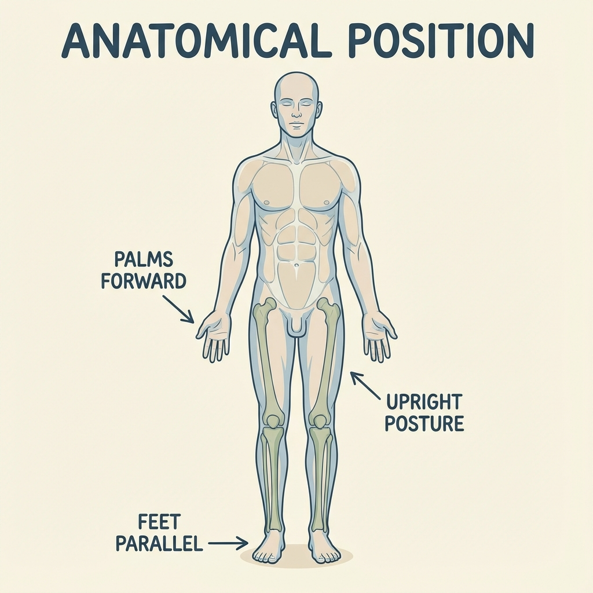
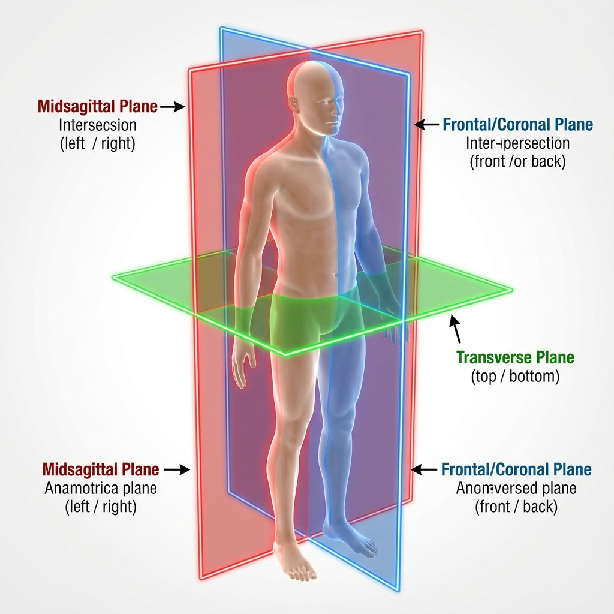
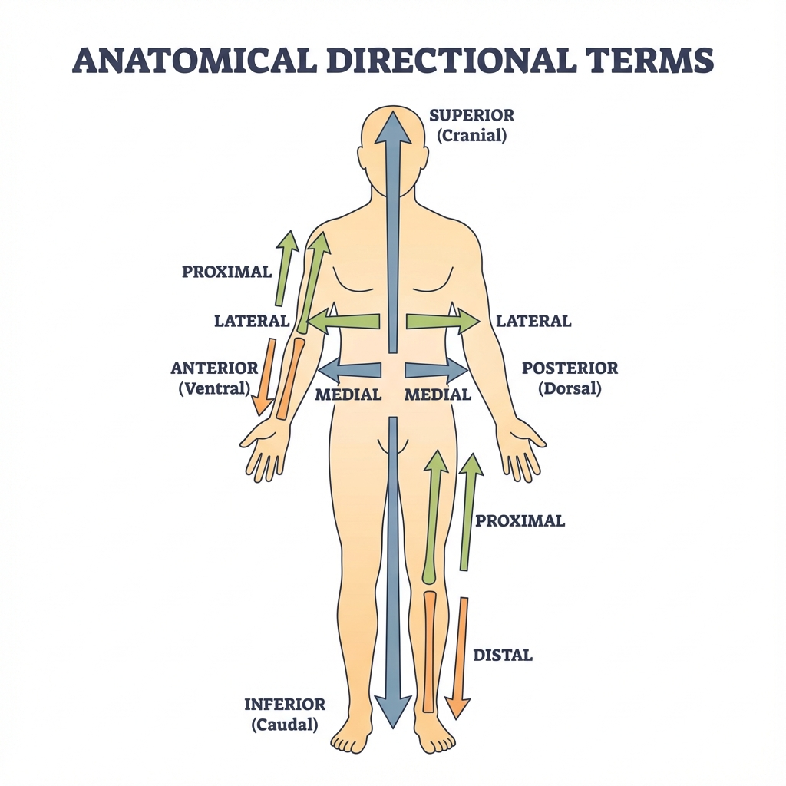
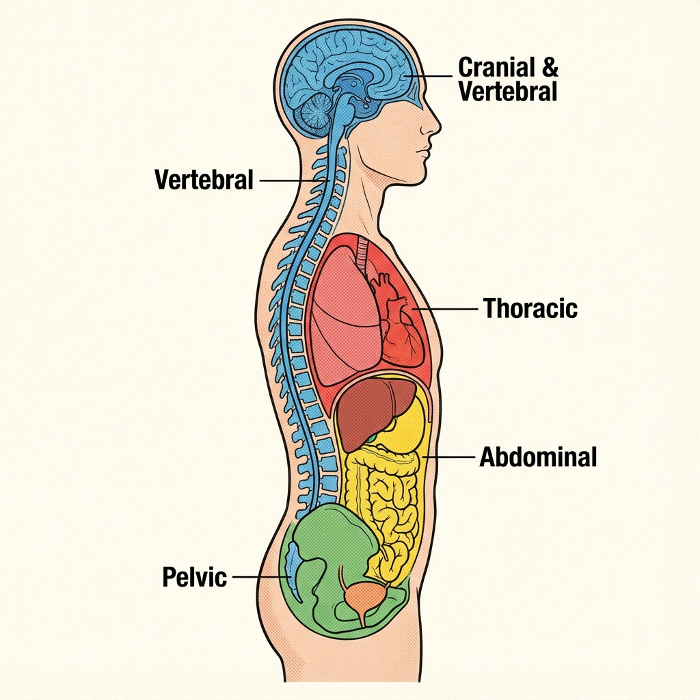

fig 1.1 - The Human Form
Definition & Etymology
Formal Definition
Anatomy is the biological science concerned with the identification, description, and structural organization of living systems. It specifically examines the physical relationship between body parts.
Etymological Origin
The term is derived from the Greek language, reflecting the discipline's ancient roots in dissection:
- "Ana" (Greek): Meaning "up", "against", or "apart".
- "Tomos" (Greek): Meaning "cutting" or "section".
- Combined: "Anatome" literally translates to "dissection" or "cutting up".
History & Founders of Anatomy
The study of anatomy has evolved over millennia. Key historical figures established the foundations of modern medical science.
Hippocrates
"Father of Medicine"
Greek physician who separated medicine from superstition. He emphasized that disease is a product of environmental factors, diet, and living habits, not punishment from gods. He established the ethical basis of medicine (Hippocratic Oath).
Herophilus
"Father of Anatomy"
A Greek physician who was the first to perform systematic dissections of human cadavers. He distinguished nerves from blood vessels and sensory nerves from motor nerves. He significantly advanced the knowledge of the brain and eye.
Andreas Vesalius
"Father of Modern Anatomy"
A Flemish anatomist who challenged the 1300-year-old dogmas of Galen. His masterpiece, De Humani Corporis Fabrica (On the Fabric of the Human Body), published in 1543, is considered the foundational text of modern human anatomy, based on precise observation and dissection.
Branches of Anatomy
Gross Anatomy (Macroscopic)
The study of anatomical structures that can be seen without magnification.
Primary Subdivisions:
- Regional Anatomy: Organization of the body into major parts (e.g., Head, Neck, Thorax, Abdomen).
- Systemic Anatomy: Study of the body's systems (e.g., Skeletal, Muscular, Nervous systems).
- Surface Anatomy: Study of internal structures as they relate to the overlying skin surface (essential for physical assessment).
Microscopic Anatomy
The study of structures that are too small to be seen with the naked eye.
- Cytology: The analysis of the internal structure of individual cells.
- Histology: The examination of tissues (groups of specialized cells).
Developmental Anatomy
The study of structural changes throughout the life span.
- Embryology: Developmental changes that occur before birth.
Anatomical Terminology
The Language of Medicine
Precise anatomical terminology is the foundation of medical communication. It prevents ambiguity and errors. For example, "intermedial" is clearer than "kind of in the middle".
Anatomical Position
Definition: The standard reference position for the body used to describe the location of structures.
Key Criteria:
- Body standing erect (upright)
- Eyes looking forward
- Arms hanging at the sides
- Palms facing forward (Anteriorly)
- Feet slightly apart, toes pointing forward

Anatomical Planes
Planes are hypothetical flat surfaces that section the body to visualize internal structures.

Sagittal Plane
Divides: Body into Right and Left parts.
- Midsagittal: Equal halves (midline).
- Parasagittal: Unequal halves.
Coronal (Frontal) Plane
Divides: Body into Anterior (front) and Posterior (back) parts.
Transverse (Axial) Plane
Divides: Body into Superior (upper) and Inferior (lower) parts.
Also called a cross-section.
Directional Terms

Superior (Cranial)
Toward the head end or upper part of a structure.
Inferior (Caudal)
Away from the head end or toward the lower part.
Anterior (Ventral)
Toward or at the front of the body.
Posterior (Dorsal)
Toward or at the back of the body.
Medial
Toward the midline of the body.
Lateral
Away from the midline of the body.
Proximal
Closer to the origin of the body part or attachment point.
Distal
Farther from the origin of the body part.
Body Cavities

Body cavities are confined spaces within the body that contain, protect, and separate internal organs.
Dorsal Cavity
Protects the fragile nervous system organs.
1. Cranial Cavity
Encased by the skull; contains the Brain.
2. Vertebral (Spinal) Cavity
Encased by the vertebrae; contains the Spinal Cord.
Ventral Cavity
Houses the internal organs (viscera).
1. Thoracic Cavity
Superior subdivision. Surrounded by ribs and chest muscles.
- Pleural Cavities: Each house a lung.
- Mediastinum: Contains the Pericardial cavity (heart), esophagus, trachea.
2. Abdominopelvic Cavity
Inferior subdivision. Separated from thoracic by the diaphragm.
- Abdominal: Stomach, intestine, liver, spleen.
- Pelvic: Bladder, reproductive organs, rectum.
Clinical Significance in Nursing
A robust understanding of anatomy is not merely academic; it is vital for patient safety and effective care delivery.
- Physical Assessment: Differentiating normal physiological structure from pathological variants (e.g., identifying organ enlargement).
- Procedural Safety: Identifying safe landmarks for intramuscular injections, catheterizations, and surgical interventions to avoid nerve or vessel damage.
- Interprofessional Communication: Accurately describing the location of wounds, pain, or lesions to physicians and other team members (e.g., "Patient has a laceration on the distal anterior forearm").